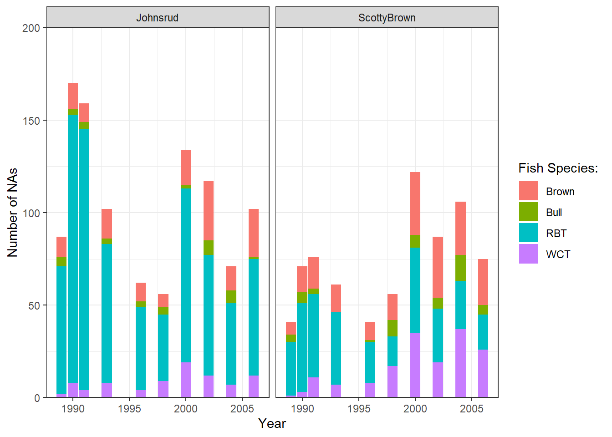
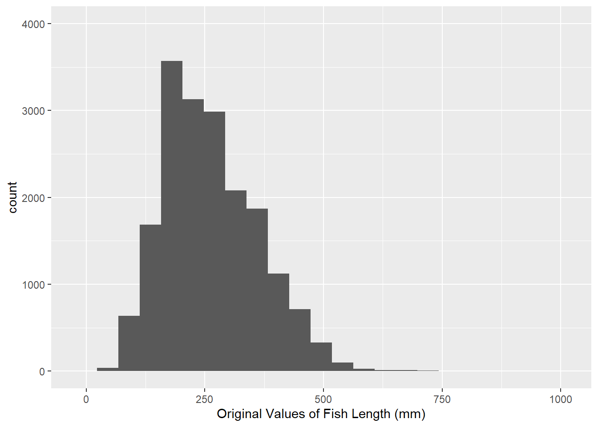
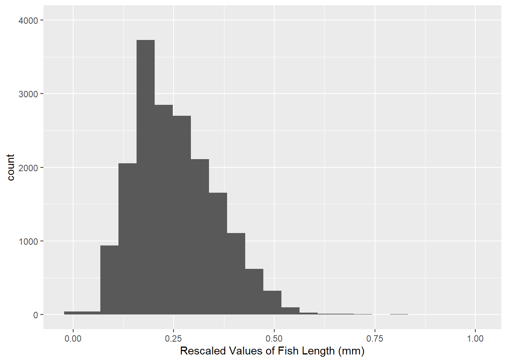

The goal of this lab is learn more about exploring missing data and writing modular code.
library(tidyverse)
── Attaching core tidyverse packages ──────────────────────── tidyverse 2.0.0 ──
✔ dplyr 1.1.4 ✔ readr 2.1.5
✔ forcats 1.0.0 ✔ stringr 1.5.1
✔ ggplot2 3.5.1 ✔ tibble 3.2.1
✔ lubridate 1.9.4 ✔ tidyr 1.3.1
✔ purrr 1.0.2
── Conflicts ────────────────────────────────────────── tidyverse_conflicts() ──
✖ dplyr::filter() masks stats::filter()
✖ dplyr::lag() masks stats::lag()
ℹ Use the conflicted package (<http://conflicted.r-lib.org/>) to force all conflicts to become errors
fish <-read_csv("BlackfootFish.csv")
Rows: 18352 Columns: 7
── Column specification ────────────────────────────────────────────────────────
Delimiter: ","
chr (2): section, species
dbl (5): trip, mark, length, weight, year
ℹ Use `spec()` to retrieve the full column specification for this data.
ℹ Specify the column types or set `show_col_types = FALSE` to quiet this message.
The Data
This lab’s data concerns mark-recapture data on four species of trout from the Blackfoot River outside of Helena, Montana. These four species are rainbow trout (RBT), westslope cutthroat trout (WCT), bull trout, and brown trout.
Mark-recapture is a common method used by ecologists to estimate a population’s size when it is impossible to conduct a census (count every animal). This method works by tagging animals with a tracking device so that scientists can track their movement and presence.
Data Exploration
The measurements of each captured fish were taken by a biologist on a raft in the river. The lack of a laboratory setting opens the door to the possibility of measurement errors.
1a. Let’s look for missing values in the dataset. Output ONE table that answers BOTH of the following questions:
How many observations have missing values?
What variable(s) have missing values present?
You should use across()!
fish |>summarise(across(1:7,~sum(is.na(.))))
# A tibble: 1 × 7
trip mark length weight year section species
<int> <int> <int> <int> <int> <int> <int>
1 0 0 0 1796 0 0 0
1b. Using map_int(), produce a nicely formatted table of the number of missing values for each variable in the fish data that displays the same information as 1a
fish |>map_int(~sum(is.na(.)))
trip mark length weight year section species
0 0 0 1796 0 0 0
2. Create ONE thoughtful visualization that explores the frequency of missing values across the different years, sections, and trips.
fish |>group_by(year, section, species) |>summarise(nas =sum(is.na(weight))) |>ggplot(aes(x = year, y = nas, fill = species)) +geom_col() +facet_wrap(~ section) +labs(y ="Number of NAs",x ="Year",fill ="Fish Species:") +theme_bw() +scale_y_continuous(expand =c(0,0), limits =c(0, 200))
`summarise()` has grouped output by 'year', 'section'. You can override using
the `.groups` argument.

Rescaling the Data
If I wanted to rescale every quantitative variable in my dataset so that they only have values between 0 and 1, I could use this formula:
This process of duplicating an action multiple times can make it difficult to understand the intent of the process. Additionally, it can make it very difficult to spot mistakes.
3. What is the mistake I made in the above rescaling code?
You accidentally subtracted the minimum length from the maximum weight when reducing the scale of weight.
When you find yourself copy-pasting lines of code, it’s time to write a function, instead!
4. Transform the repeated process above into a rescale_01() function. Your function should…
… take a single vector as input.
… return the rescaled vector.
rescale_01 <-function(x) {if(!is.numeric(x)) {stop("Input vector is not numeric") }if(length(x) <=1) {stop("Length of the input vector is not greater than 1") } ((x -min(x, na.rm =TRUE)) / (max(x, na.rm =TRUE) -min(x, na.rm =TRUE)))}
Efficiency
Think about the efficiency of the function you wrote. Are you calling the same function multiple times? You might want to look into the range() function.
5. Let’s incorporate some input validation into your function. Modify your previous code so that the function stops if …
… the input vector is not numeric.
… the length of the input vector is not greater than 1.
Modify Previous Code
Do not create a new code chunk here – simply add these stops to your function above!
Test Your Function
6. Run the code below to test your function. Verify that the maximum of your rescaled vector is 1 and the minimum is 0!
x <-c(1:25, NA)rescaled <-rescale_01(x)min(rescaled, na.rm =TRUE)
[1] 0
max(rescaled, na.rm =TRUE)
[1] 1
Next, let’s test the function on the length column of the BlackfootFish data.
7. The code below makes a histogram of the original values of length. Add a plot of the rescaled values of length. Output your plots side-by-side, so the reader can confirm the only aspect that has changed is the scale.
Warning
This will require you to call your rescale_01() function within a mutate() statement in order to create a length_scaled variable.
fish |>ggplot(aes(x = length)) +geom_histogram(binwidth =45) +labs(x ="Original Values of Fish Length (mm)") +scale_y_continuous(limits =c(0,4000))fish |>mutate(length_rescaled =rescale_01(length)) |>ggplot(aes(x = length_rescaled)) +geom_histogram(binwidth =0.045) +labs(x ="Rescaled Values of Fish Length (mm)") +scale_y_continuous(limits =c(0,4000))


Tip
Set the y-axis limits for both plots to go from 0 to 4000 to allow for direct comparison across plots.
Pay attention to binwidth!
Use a Quarto code chunk option to put the plots side-by-side.
Challenge: Use Variables within a Dataset
Suppose you would like for your rescale() function to perform operations on a variable within a dataset. Ideally, your function would take in a data frame and a variable name as inputs and return a data frame where the variable has been rescaled.
8. Create a rescale_column() function that accepts two arguments:
a dataframe
the name(s) of the variable(s) to be rescaled
The body of the function should call the original rescale_01() function you wrote previously. Your solution MUST use one of the rlang options from class.
Tip
If you are struggling with this task, I recommend looking back over the data frame functions section of R for Data Science!
9. Use your rescale_column() function to rescale both the length and weight columns.
Warning
I expect that you carry out this process by calling the rescale_column() function only ONE time!